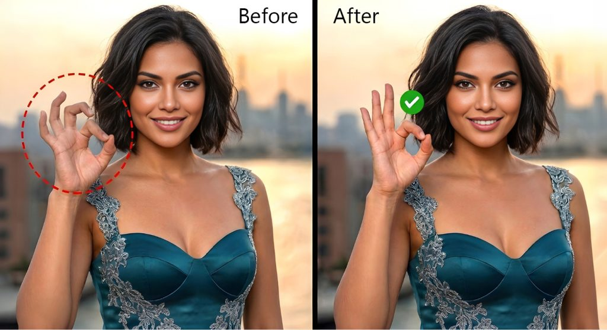

Hand & Finger Anatomy Correction
Extra fingers, fused hands, broken knuckle structure, and incorrect wrist anatomy are the most common AI errors. We rebuild hands using the clone stamp and healing brush, matching surrounding skin tone, texture, and anatomical proportion. Complex hand poses and interlocking fingers are corrected individually to look natural and realistic.
- Extra or malformed fingers removed
- Fused hands separated cleanly
- Knuckle and joint anatomy corrected
- Skin tone and texture matched seamlessly